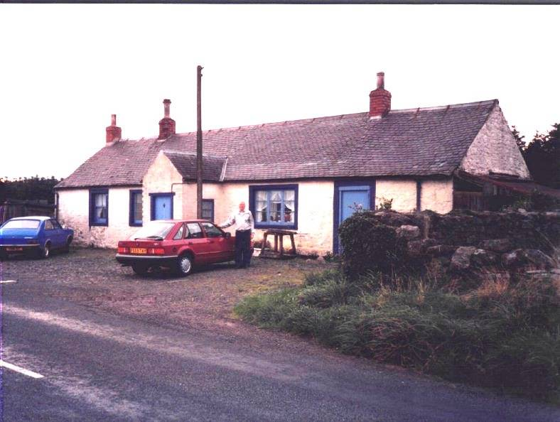

The Family Chronicle
No. 4 1998 06 07
___________________________________________________________________________
Callister Hall
My Great-grandfather, John Glendinning was born at Callister Hall, Dumfriesshire, Scotland on April 2, 1807. Callister Hall still stands, although it was believed to have suffered severe fire damage in earlier years. At one time it was said to have served as a stage-coach stop and Inn. The photo of me in front of Callister Hall was taken in 1988.
Callister Hall was shown on maps of Scotland but not any longer. It is not in a village; it is a building on the side, if a narrow paved country road, out in sheep country. This also supports the family belief that our Grandmother had a shuttle supposedly brought from Scotland. It is not very far from Lockerbie where the major plane crash occurred a few years ago. Annan was the seaport from which John Glendinning sailed. As I recall, Annan and Callister Hall would be 30 to 40 miles apart.
Harley Connection
Thanks to Willis Hamilton of Saint John, some new information has come to light on the Harley family. Five Harley children came to New Brunswick in the 1820's. Margaret (1803-1895) who married John Glendinning, Mary Ann (1799-1898) who married John Henry from Newcastle, Elizabeth (1796-1876) who married William Knowles, John who was a boat builder on the Miramichi and William who was a surveyor. William moved to Fredericton where he married, he later moved to Upper Canada.
Their father, who was English, taught school in Courtmasherry, County Cork, Ireland where all the children were born.
John Henry died in 1870 and Mary Ann moved to Portland, Maine where some of her children were living (she had nine). Her 99th birthday party was reported in a Portland newspaper. According to the new item, Mary Ann, while living in Ireland, received a letter from her brother suggesting that she

Don Glendennings in front of Callister Hall, Scotland
came to Canada and that he had a Ayoung handsome and wealthy husband waiting@ for her. The ship and its 150 passengers sailed on May 7, 1822 and the crossing took seven weeks and three days; Mary Ann was sick most of the way. The ship and its passengers landed at APockshaw@ (Pokeshaw) where she was met by her brother. They walked through A a trackless forest@ to Newcastle, a distance of 85 miles, Mary Ann reported that there was not path, no conveyance, not a tree had been cut; using a compass, they made their way across windfalls and over brooks arriving in Newcastle on the fourth night. Eight months later, she married John Henry.
Watling
Watling is a rare name so, when I saw reference to it at a genealogy shop last winger I stopped to take a look. I also bought one of those family name scrolls. I=ve summarized it below.
Watling is likely originally a Viking name which came first to Norther Scotland, then to France and finally to England. The first record of the name was found in Sussex and would be somewhere between London and Dover. They were Lords of the Manor and may well have been there from the time of William the Conqueror (1066). While the origin is not known precisely, it is likely either that they came from the village of Wartlington or were in some way, connected with the great Roman Road, Watling Street, which starts in Sussex and continues into Northern England.
Watling is thought to share the same roots as Whatling, Watlington, Watlingtone, Whatlington, Whatlingtone, Wadling and Wadlington. Over time, the name spread northward through England and into Scotland.
Thomas Watling was banished to Australia for forgery in 1792; Francis Watling settled in Virginia in 1660, John Watling landed in America in 1753 and Mary Watlington settled in Antigua in 1759.
Jardine
In an earlier issue, I referred to some information in the Jardine family history which is at odds with what I have. Thanks to information from a number of people, I am convinced that our Great-grandmother was Elspeth Jardine and not Elizabeth Jardine as reported in the Jardine history.
As far as I can figure out, our Great-grandmother, Elspeth Jardine who married John MacDonald, was the daughter of James Jardine (son of Joseph and Janet (Kerr) Jardine of Tundergarth, Dumfriesshire, Scotland). Great-grandmother=s brothers and sisters included Margaret who married Thomas Lockerbie, Joseph who married Barbara Rust, Janet who married Francis McKnight, George who married Mary Cameron, and James.
The Jane Elizabeth Jardine, after whom my mother was named, was a first cousin of my Great-grandmother. Her father was John, a brother of Frank.
The Chronicle is an occasional newsletter published by Don Glendenning It is intended to solicit and provide information about family tree matters. Comments, enquiries and information maay be sent to 62 Queen Elizabeth Drive, Charlottetown, PEI, C1A 3A9. Tel:902 892 5859 Email dglende@ibm.net. Feel free to make and pass along copies of this newsletter.